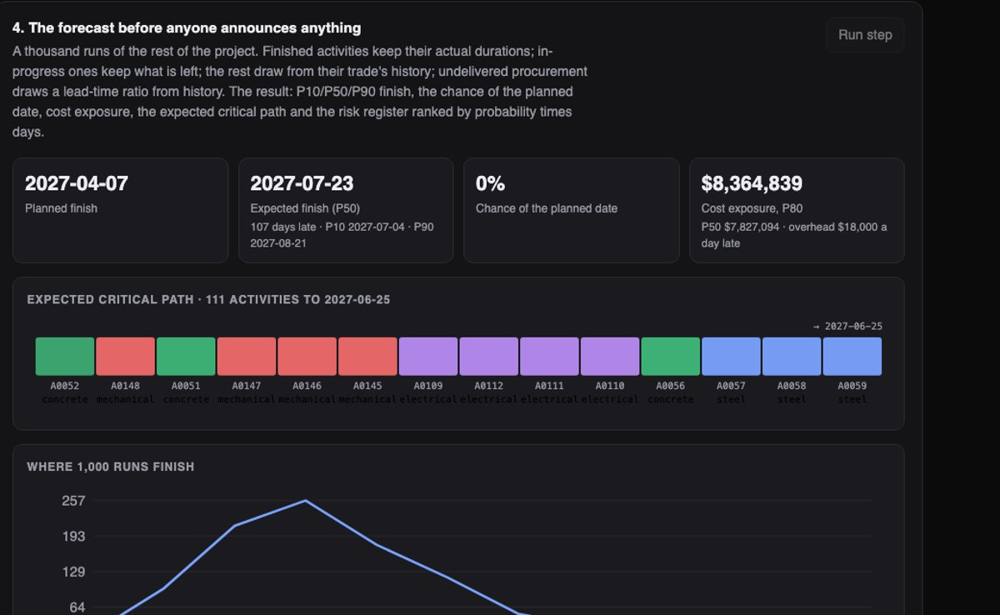
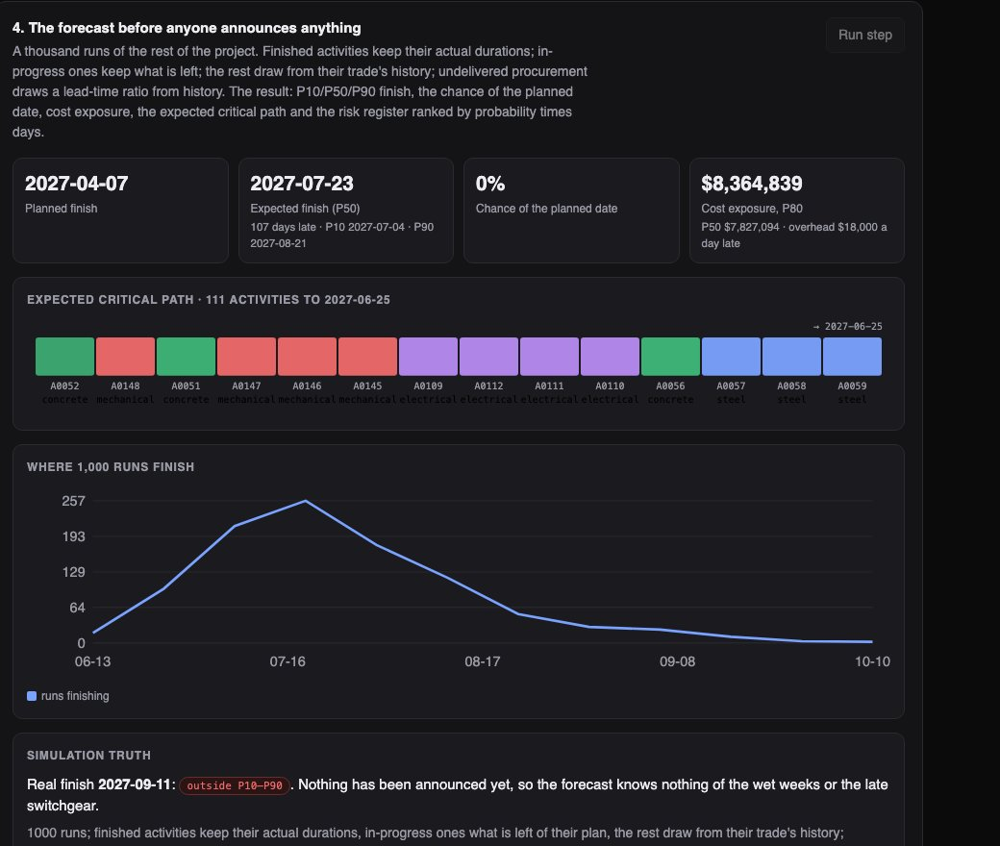
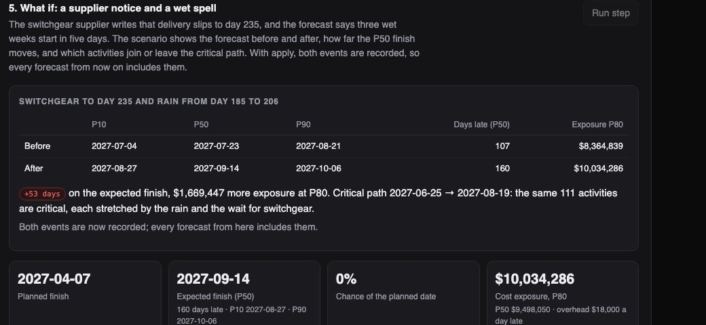

Python · Monte Carlo · Critical path · 2026-10
When Does the Building Really Finish?
Schedule risk for an invented 8-storey tower on day 180 of a 310-day plan: a Monte Carlo forecast that knows only what the site has told it (and misses, visibly, until it is told), the activities and suppliers that decide the date, what a late delivery and three wet weeks cost, a site photo against the record, and a change order simulated before anyone signs.

Built from a written blueprint as one vertical slice. The project, its history, its suppliers and the site photo are simulated: 600 activities and twenty past projects come from a generator in the repository, and what really happens to this project is a hidden draw from the same process, which is what lets every forecast be checked against the truth. The photo reader counts coloured rectangles in a schematic image and says so; it is not a vision model. No language model is used. Not built: Primavera/IFC adapters, a vision model, a survival model for lead times, weather feeds, document search, Kafka, Terraform, single sign-on.
01 — The problem
Every construction schedule says the building finishes on time, and most buildings do not. The plan does not know that trades run late, that a supplier will slip, or that it will rain on the critical path; by the time the schedule tool shows the slip, the money is spent. The people who approve change orders see a requested extension, not what the change does to the date. Can software forecast the finish with an honest band, say which activities and suppliers decide it, show what a disruption or a change does before it happens, and be clear about what it does not know?
Blueprint 8 of fifteen in a third build book, built as its demo scenario end to end.
02 — What I built
A Python service on PostgreSQL with a background worker and a web page, started by one docker compose up.
- Schedule and BIM imports shaped like Primavera and IFC exports, with the rules a scheduler expects (a finished activity cannot go backwards).
- Models from history: per-trade duration ratios, per-supplier lead-time ratios, a late-activity classifier, all fitted on twenty past projects.
- A Monte Carlo forecast over the remaining network: P10/P50/P90 finish, chance of the planned date, cost exposure, the share of runs each activity is critical in.
- Scenarios for a late delivery or a wet spell, before and after, recorded with one flag; change orders simulated to best, expected and worst, decided only after.
- A photo against the record, with a reader that says it is a toy.
03 — How it was built
- 01
A project that behaves like one
Civil works, then per floor: core walls, five bays of steel and deck, four curtain-wall elevations, four zones each of mechanical, electrical, drywall and fit-out, then commissioning and punch lists; 600 activities and 908 finish-to-start dependencies. Crews run bays in parallel, and four long-lead items (steel, curtain wall, switchgear, elevators) gate the trades they feed. Each trade has a median overrun and a spread, higher floors and procurement-fed work run later, and the project the demo loads is one hidden draw from that process plus a late steel delivery, a late switchgear delivery and three wet weeks.
dur = a["duration"] * exp(normal(log(median), sd)) * (1 + 0.025 * floor) * (1.12 if a["procurement"] else 1) - 02
A forecast that knows only what the site has told it
A thousand runs. Finished activities keep their actual durations; in-progress ones keep what is left of their plan, scaled; the rest draw from their trade's history; undelivered procurement draws a lead-time ratio from history unless a notice fixes it; announced wet weather slows outdoor work that overlaps it. Each run is a critical-path pass, so the result has a band around the finish, a chance of the planned date, a cost exposure and, for every activity, the share of runs in which it was critical. The first version read the weather and the deliveries from the simulator and covered the truth every time, which proved nothing; now the forecast knows only imports, delivered items and applied notices, and the demo's first forecast misses the truth and says so.
es = np.where(st["started"], st["start"], np.maximum(es, now * ~st["started"])) # nothing new starts before today start, finish, slack, crit = cpm(n, deps, rain_adjusted(w, dur, rain, es, deps), es) - 03
Tell it, and watch the date move
One call carries a supplier's notice and a weather forecast; the response shows the finish before and after, how far the P50 moves (53 days in the demo), the extra exposure at P80 ($1.67M), and which activities join or leave the critical path. With
apply, the events are recorded and every forecast from then on includes them. The real finish, outside the first forecast's band, is inside the second's. The forecast is only as good as the telling, so the telling is one call.before = run_forecast(w, st, known, rain, notices, now) after = run_forecast(w, st, known, new_rain, new_notices, now) - 04
A change order simulated before it is decided
Upgraded finishes: 3 extra days on each of 393 remaining finishes activities, $450,000 and 30 days requested. The impact run adds the days and reruns the forecast: best, expected and worst completion, and the simulated shift beside the requested one. In the demo the request is 17 days short of what the simulation expects (30 vs 47 days). A director can decide only after the impact exists; trying earlier is refused.
if co["status"] != "evaluated": raise Problem(409, "not_evaluated", "simulate its impact first") - 05
The honest parts
The late-activity classifier has an AUC of 0.61 and is used only to rank risks; the page says so. The photo reader counts blue rectangles in a schematic elevation and labels itself a toy. The evaluation reports that being told the disruptions helped less than hoped, because most fall on work with float, and that the band is a little narrow because a slow crew is slow on every floor and that correlation is not modelled. Each of these is a line on the page rather than a footnote.
"method": "counts blue (glazed) panels in a schematic elevation; a toy reader, not a vision model"
04 — Results
The demo. The first forecast, before anything is announced: 107 days late at P50, the expected critical path of 111 activities, and the real finish outside the band because the site has not said anything yet.

The scenario: a switchgear notice and three wet weeks move the expected finish 53 days and add $1.67M of exposure.

On three other simulated projects, 24 outcomes, forecast on day 180:
| Mean error | Bias | Truth inside P10–P90 | |
|---|---|---|---|
| Re-plan at planned durations | 80 days | 80 early | no band |
| Monte Carlo, site status only | 17 days | 6 early | 75% |
| Monte Carlo, told the disruptions | 14 days | 2 late | 71% |
The gain over re-planning is large and comes from history: trades run late and the plan does not know it. Being told helped less than hoped (most disruptions fell on work with float), and the band is a little narrow for an 80% band. The late-activity classifier reaches an AUC of 0.61 on held-out past projects, weak and used only to rank risks.
Honest limits. The past projects come from the same process as the one forecast, which is the generous case. Correlated overruns are not modelled. The photo reader reads nothing from a real photo. The cost exposure is a stated formula.
Checks. 13 tests, including: the network is a DAG and CPM matches a hand case, status splits done, in-progress and to-come, the forecast told the disruptions covers the truth and moves the right way, rain slows only outdoor work in the window, the reader counts 0, 12, 24, 36 and 48 panels exactly, a finished activity cannot go backwards, a scenario without apply records nothing, a director cannot decide before the impact run, and one contractor cannot see another's project.
05 — What I'd do next
- Correlated overruns (a crew factor shared across floors) and a check that the band widens to cover.
- A real schedule export, with the forecast scored against what the project then did.
- Cost-loaded activities and earned value beside the duration-based exposure.